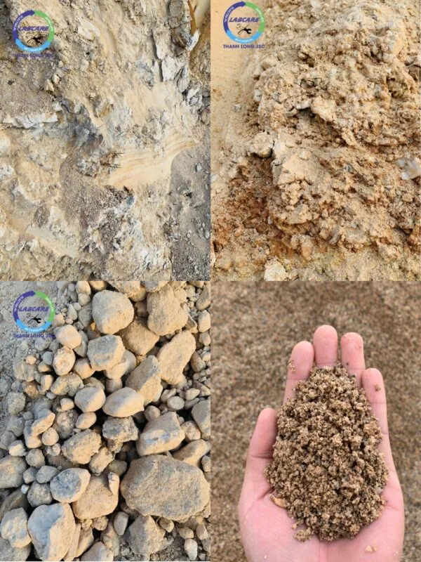

Nguồn cát tự nhiên tại các sông, suối đang hạn chế tối đa khai thác trái phép. Việc khai thác cát đồi đang là mối quan tâm hàng đầu của nhiều công ty doanh nghiệp. Ở nhiều tỉnh trên cả nước, có nguồn tài nguyên khoáng sản lớn. Các mỏ cát đồi chủ yếu tập trung ở các vùng nhiều đồi núi như Ninh Thuận, Bình Thuận, Tây Nguyên, Đắk Lắk, Cao Bằng, Yên Bái, Kiên Giang, An Giang… Tuy nhiên việc sàng lọc cát đồi loại bỏ các mảnh rác và sỏi lớn, cũng như loại bỏ được bụi, đất, đất sét và các chất hữu cơ không được sàng rửa kỹ lưỡng. Gây ảnh hưởng đến các dự án lớn cho các chủ đầu tư. Báo giá máy rửa cát đồi là giải pháp tiết kiệm, đúng đắn nhất.
Mỏ cát đồi có những đặc điểm
Các mỏ cát đồi thường là sản phẩm của các hoạt động kiến tạo địa chất đã đẩy các lòng sông hồ thành các ngọn đồi. Trong quá trình hình thành bề mặt trái đất do cấu tạo địa chất, cát sỏi được tích trữ trong các thung lũng hoặc lòng hồ. Các mỏ cát đồi được đặc trưng bởi một lượng lớn phù sa và xác của cây cối. Tỷ lệ đất phù sa này thay đổi tùy theo từng nơi.
Mỏ cát đồi thường có một lớp thực vật mỏng trên bề mặt, tùy vào thời gian hình thành.
Tỉ lệ hạt cát và sỏi kích thước ở mỗi mỏ khác nhau cho nên không thể áp dụng một phương pháp rửa cát đồi cho tất cả các mỏ được.

Hệ lụy của “cát bẩn”. Báo giá máy rửa cát đồi
Cát sạch là một trong những yếu tố quan trọng. Để bê tông, vữa không bị thấm nước tạo ẩm mốc rong rêu, bền màu sơn không bong tróc. Mà còn tác động lớn đến ngành xây dựng, các dự án lớn như: Sân bay Long Thành, Cao tốc Bắc – Nam, Cao tốc Phú Yên – Tây Nguyên, cao tốc Đắk Lắk – Khánh Hòa, nâng cấp mở rộng thêm các tuyến Đường cao tốc nối các tỉnh Tây Nguyên, cửa khẩu Hữu Nghị – Lạng Sơn; nối TP. Hà Giang với cao tốc Nội Bài – Lào Cai, …
Khi sử dụng giúp tiết kiệm chi phí kỹ thuật bảo trì và chi phí đầu tư xây dựng. Bê tông được sử dụng cát đã qua máy rửa cát đồi, sẽ cao hơn 20-30% so với cát đồi bẩn chưa qua xử lý.
Nguyên nhân dẫn đến chất lượng bê tông kém là do sử dụng cát bẩn. Rất phổ biến là mua cát ở cửa hàng, sàng lọc nguyên liệu bằng tay và sử dụng ngay. Việc sàng lọc cát chỉ có thể loại bỏ các mảnh rác và sỏi lớn, nhưng không loại bỏ được bụi, đất, đất sét và các chất hữu cơ. Dẫn đến mất uy tín với đối tác, tốn thời gian thi công, tốn chi phí và thời gian, ….
Máy rửa cát đồi McLanahan – giúp cát ra sạch, đẹp, đảm bảo tiêu chuẩn
Giải pháp bằng máy rửa cát đồi McLanahan
Máy rửa cát đồi McLanahan dòng UltraWASH – một trong những thiết bị hiện đại của một trong bốn nhà sản xuất máy rửa cát lớn nhất thế giới, hiện đã có mặt trên thị trường Việt Nam.
Đây là loại máy duy nhất trên thế giới có thể tạo ra module cát theo ý muốn của khách hàng. Máy rửa cát McLanahan dòng UltraWASH được thiết kế và lắp sẵn các hệ thống dây điện, module, giúp việc lắp đặt và vận hành nhanh chóng. Máy rửa cát Mclanahan được có sàng thao tác, lan can và cầu thang đã bao gồm đầy đủ kèm theo máy.
Thiết bị rửa cát đồi UltraWASH McLanahan
Đặc điểm và nguyên lý hoạt động của máy rửa cát đồi McLanahan dòng UltraWash
- Hệ thống được bảo vệ khỏi vật liệu đầu vào quá cỡ bởi lưới nghiêng hoặc lưới nghiêng thủy lực (lựa chọn thêm)
- Nguồn nguyên liệu vào phễu chứa được trộn tự do với nước.
- Sàng rung phân loại vật liệu thành các thành phần đá và cát.
- Cửa trộn bên trong phễu thu liệu của sàng cho phép các sản phẩm đá kết hợp lại với nhau tùy theo yêu cầu khách hàng.
- Tính năng phối trộn thành phần hạt cát bằng cách tăng hoặc giảm thành phần cát mịn. Dễ dàng cho các ứng dụng cần thiết cho việc tạo module cỡ hạt cát.
- Cát và nước bùn được bơm từ bể chứa qua hai Hydrocyclones.
- Việc tái sử dụng nước tràn sẽ tối ưu lượng nước sạch cần cho việc rửa cát.
- Sản phẩm đầu ra từ dòng chảy bên dưới được xả vào một sàng tách nước.
- Sản phẩm chính cuối cùng được trộn giữa hai loại cát được lọc ra ngoài sàng tách nước.
- Phễu cấp liệu dạng băng tải gấp
- Tính năng cửa thăm của bể chứa giúp dễ dàng bảo dưỡng.
- Hệ thống Eze-Riser giúp nâng và khóa ống ở trên cao để dễ dàng tiếp cận với ống bơm.
Thanh Long JSC chuyên cung cấp:
- Dây chuyền nghiền cát/đá cố định: Máy kẹp hàm, máy nghiền côn, sàng rung phân loại, máy nghiền cát nhân tạo VSI , …
- Dây chuyền nghiền cát/đá di động: máy kẹp hàm di động, máy nghiền côn di động, sàng rung phân loại di động, máy nghiền cát nhân tạo VSI di động,..
- Công nghệ rửa/tách:: Máy rửa cát theo module, sàng rung tách nước, máy tuyển rửa cát, máy tách cát mịn, máy thu hồi cát mịn…
- Vật tư, thiết bị phụ tùng: Dao nghiền, lưới sàng, má kẹp hàm, nón côn, …
Liên hệ với Thanh Long JSC:
Kênh video Youtube:
Page Facebook: Công Nghệ Máy Nghiền Đá
Website: https://thegioimaynghienda.com https://labcare.com.vn/
#bn